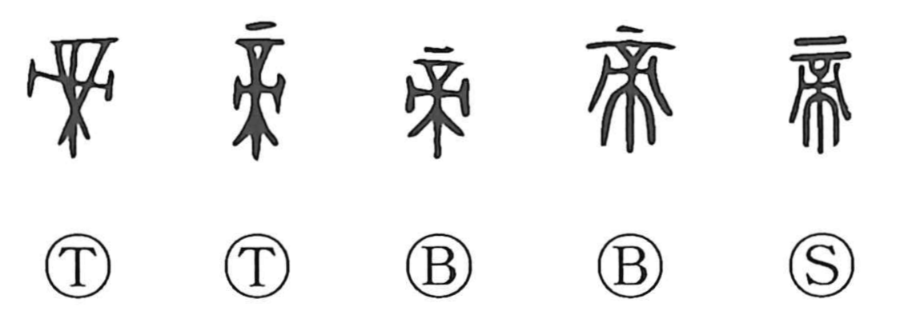

Explanation
This character began as a pictograph of a grand ritual altar—a sturdy, elevated stand on which food and wine were set out as offerings to the gods. Whereas 示 shows an ordinary altar, here the cross-legs are firmly braced to signify the great altar reserved for the highest powers of heaven. Originally, 帝 named the deity worshiped at that great altar: the amatsukami, a nature god, with 上帝—the Supreme Deity—at the pinnacle. Bronze inscriptions depict ancestral spirits dwelling in heaven, attending at the left and right of this Supreme Deity. The state sacrifice in honor of 帝 was called 禘. From the same ritual sphere arise related graphs, such as 啻 (the proto-form of 嫡), created by adding a covenant vessel in which recited prayers were placed; 商 and 嫡 thus point to those socially entitled to conduct worship of the heavenly god. In later usage, 帝 came to designate the emperor, the Son of Heaven.